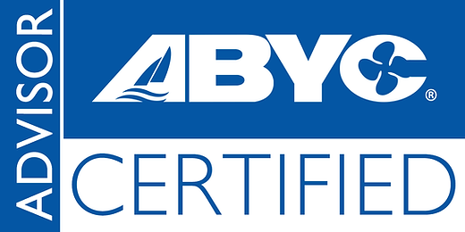

Red Ensign yacht registration
Jersey Yacht Tonnage Measurement
Yacht tonnage measurement for Jersey full registration through Tony Gagliardo’s established IIMS services. Direct support for owners, brokers and closing agents arranging registration or a change of flag.
Tonnage measurement for Jersey full registration
Preparing your yacht for Jersey full registration? Send Tony the vessel particulars, any existing tonnage certificate and your registration agent’s instructions. He will discuss the measurement work and coordinate the timing with your transaction.
Global Yacht Surveyor works with international yacht owners, including North American buyers, and the brokers, closing agents and registration professionals handling their transactions. Whether you are purchasing a yacht, registering it for the first time or changing flag, Tony helps coordinate the tonnage measurement with your registration and closing timetable.
Typical turnaround: 3–5 business days
For established IIMS tonnage assignments, typical turnaround is 3–5 business days once the required information is complete and the measurement has been carried out. Allow up to a week where the remaining work is within our control. Tony will confirm the expected completion date for your assignment.
Direct communication, minimal disruption
Survey arrangements are planned to minimise disruption to the yacht and its schedule. You deal directly with Tony, with clear professional communication throughout the assignment.
Competitive fees, with a clear quotation agreed before work begins.
Yacht brokers and closing agents
Have a client who needs tonnage measurement for registration? Refer them directly to Tony, or send the yacht’s details, intended flag and closing date. Tony will coordinate with you and the client to agree the scope, fee and timing and help keep the transaction moving.
Request a quote
Send Tony the yacht’s make, model, year, approximate length and current location, together with the intended registry, private or commercial use, and your target completion or closing date. Include any existing tonnage certificate or instructions from your registration agent.
Tony will discuss the scope, survey arrangements, fee and expected timing with you before proceeding.
Useful registry information
